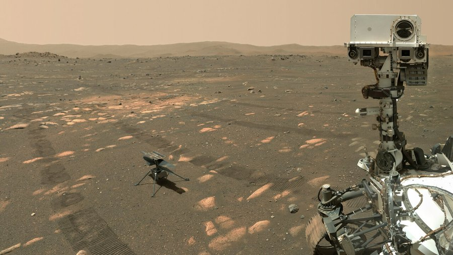

NASA @NASA - Dec 26, 2021
Scrollable Perseverance

| A1 | A2 | A3 | A4 | A5 | A6 | A7 | A8 | A9 | A10 | Q1 | Q2 | Q3 | Q4 | Q5 | Q6 | Q7 | E1 | E2 | P1 | P2 | P3 | PT | TOTAL |
|---|---|---|---|---|---|---|---|---|---|---|---|---|---|---|---|---|---|---|---|---|---|---|---|
| 99 | 91 | 98 | 92 | 97 | 93 | 96 | 97 | 93 | 96 | 94 | 89 | 81 | 88 | 82 | 87 | 83 | 94 | 89 | 81 | 88 | 82 | 87 | 83 |